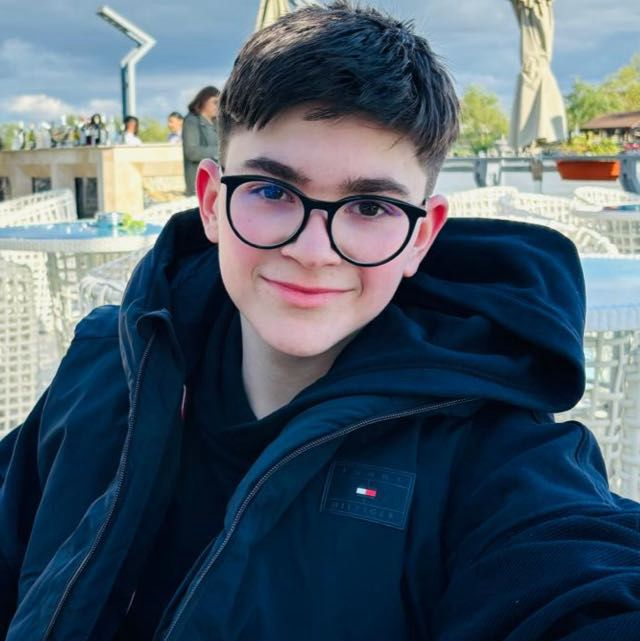

Rezumat

Rezumat
Sunt o persoana care se tine de lucru si care are initiativa. Incerc foarte des sa invat lucruri noi, care sa ma ajute sa reusesc in viata.
Educatie
Am terminat gimnaziul si liceul la Colegiul National "I.L.Caragiale" din Bucuresti.(generatia 2020-2024 gimnaziu; generatia 2024-2028 liceu)
Work experiences
Nu am experiente in domeniu, pentru ca abia am iesit din facultate.
Skill-uri
Sunt priceput in crearea unor site-uri web, avand experienta cu HTML, CSS si JAVASCRIPT, in urma unor cursuri Udemy.
Am facut si niste C++ in scoala.